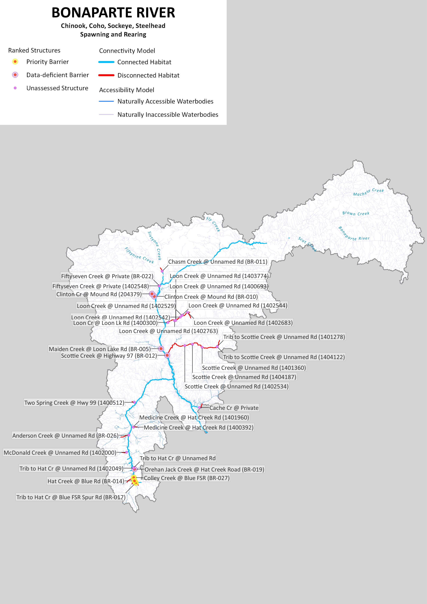
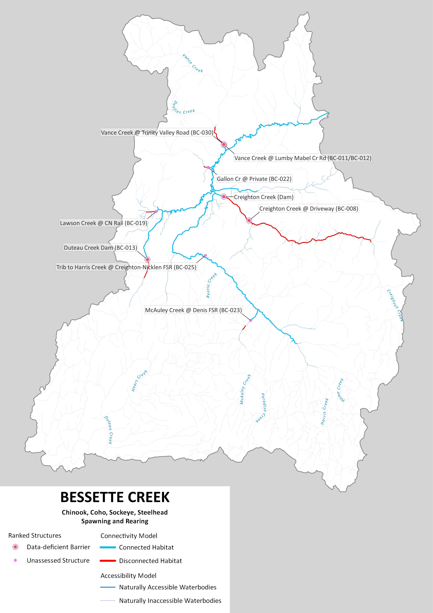
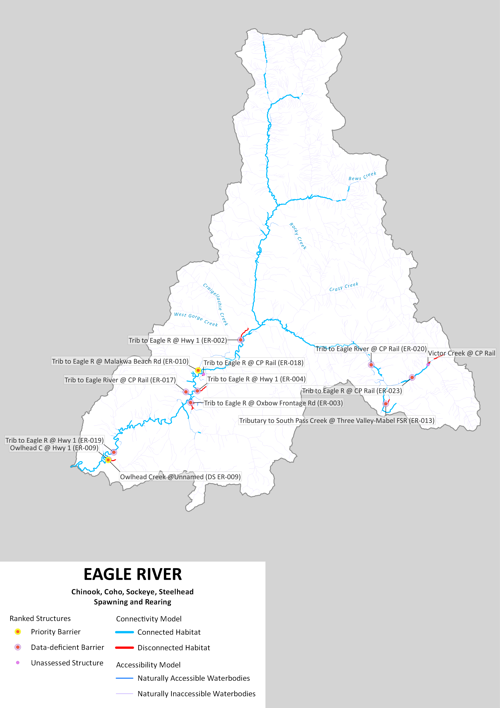
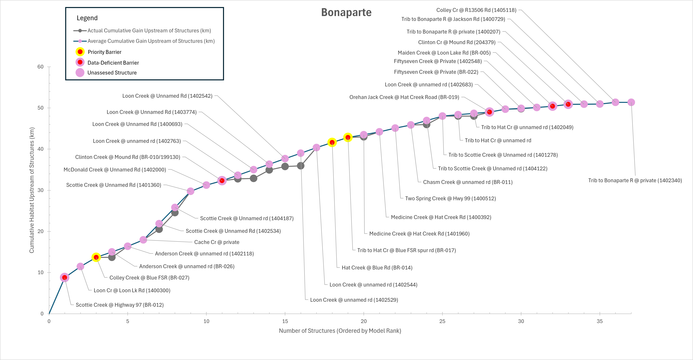
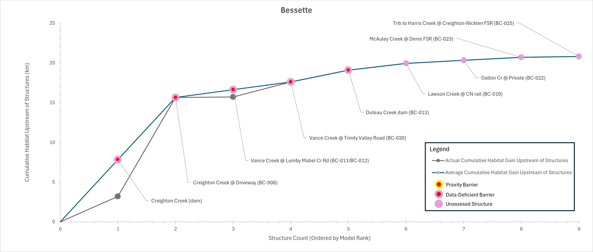
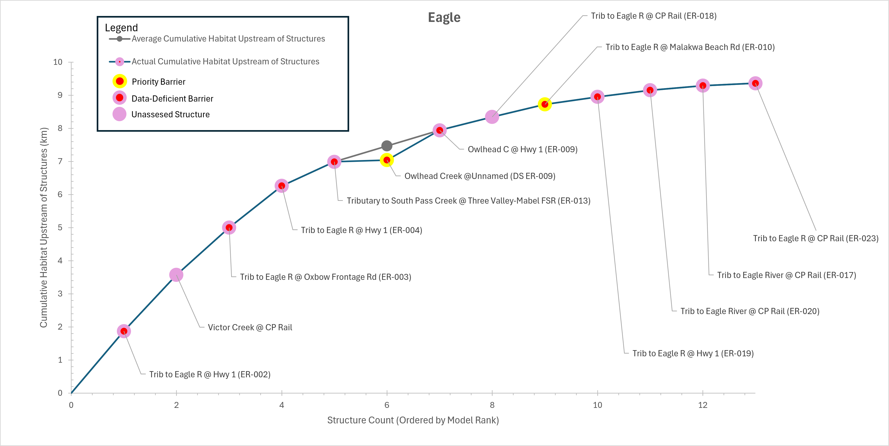

Watershed Group Code | Habitat Type | Total km | Accessible km | Percent Accessible |
|---|---|---|---|---|
Eagle River | Spawning and Rearing | 163.5905 | 154.2218 | 94.2730782 |
Watershed Group Code | Habitat Type | Total km | Accessible km | Percent Accessible |
Bessette Creek | Spawning and Rearing | 86.09338 | 65.28995 | 75.8362025 |
Watershed Group Code | Habitat Type | Total km | Accessible km | Percent Accessible |
Bonaparte River | Spawning and Rearing | 256.4209 | 205.0532 | 79.96742855 |
In the Bonaparte River watershed, 205.05 km of Pacific salmon and steelhead habitat are currently connected to the ocean and 51.37 km are disconnected from it. This means that 80.0% of the 256.42 km of total habitat is connected.
In the Bessette Creek watershed, 65.29 km of Pacific salmon and steelhead habitat are currently connected to the ocean and 20.80 km are disconnected from it. This means that 75.8% of the 86.09 km of total habitat is connected.
In the Eagle River watershed, 154.22 km of Pacific salmon and steelhead habitat are currently connected to the ocean and 9.37 km are disconnected from it. This means that 94.3% of the 163.59 km of total habitat is connected.
A breakdown of connectivity status by watershed and habitat type (i.e., spawning, rearing, both combined) is provided in Table 10.
Structure Count
In the Bonaparte River watershed, 37 structures potentially disconnect Pacific salmon and steelhead habitat. Of these, 3 are identified as barriers in need of rehabilitation (priority barriers), 0 are identified as barriers that do not warrant rehabilitation (non-actionable), and 34 require further field assessment.
In the Bessette Creek watershed, 9 structures potentially disconnect Pacific salmon and steelhead habitat. Of these, 0 are identified as barriers in need of rehabilitation (priority barriers), 0 are identified as barriers that do not warrant rehabilitation (non-actionable), and 9 require further field assessment.
In the Eagle River watershed, 13 structures potentially disconnect Pacific salmon and steelhead habitat. Of these, 2 are identified as barriers in need of rehabilitation (priority barriers), 0 are identified as barriers that do not warrant rehabilitation (non-actionable), and 11 require further field assessment.
Maps



Habitat Accumulation Curves



Habitat Accumulation Summary Table
Barrier ID | Internal Name | Structure Status | CWF Model Rank | Average Habitat Upstream of Structure (km) | Actual Habitat Upstream of Structure (km) |
|---|---|---|---|---|---|
199131 | Scottie Creek @ Highway 97 (BR-012) | Data-deficient barrier | 1 | 8.79000 | 8.79 |
1001400300 | Loon Cr @ Loon Lk Rd (1400300) | Unassessed structure | 2 | 11.46000 | 11.46 |
199148 | Colley Creek @ Blue FSR (BR-027) | Priority barrier | 3 | 13.68000 | 13.68 |
1001401966 | Anderson Creek @ unnamed rd (BR-026) | Unassessed structure | 4 | 15.03000 | 13.70 |
1001402118 | Anderson Creek @ unnamed rd (1402118) | Unassessed structure | 4 | 16.38000 | 16.38 |
1200000020 | Cache Cr @ private | Unassessed structure | 5 | 17.95000 | 17.95 |
1001402534 | Scottie Creek @ Unnamed Rd (1402534) | Unassessed structure | 6 | 21.88333 | 20.52 |
1001404187 | Scottie Creek @ Unnamed rd (1404187) | Unassessed structure | 6 | 25.81667 | 24.57 |
1001401360 | Scottie Creek @ Unnamed Rd (1401360) | Unassessed structure | 6 | 29.75000 | 29.75 |
1001402000 | McDonald Creek @ Unnamed Rd (1402000) | Unassessed structure | 7 | 31.23000 | 31.23 |
199130 | Clinton Creek @ Mound Rd (BR-010) | Data-deficient barrier | 8 | 32.31000 | 32.31 |
1001402763 | Loon Creek @ unnamed rd (1402763) | Unassessed structure | 9 | 33.64833 | 32.78 |
1001400693 | Loon Creek @ Unnamed Rd (1400693) | Unassessed structure | 9 | 34.98667 | 32.86 |
1001403774 | Loon Creek @ Unnamed Rd (1403774) | Unassessed structure | 9 | 36.32500 | 34.93 |
1001402542 | Loon Creek @ Unnamed Rd (1402542) | Unassessed structure | 9 | 37.66333 | 35.75 |
1001402529 | Loon Creek @ unnamed rd (1402529) | Unassessed structure | 9 | 39.00167 | 35.95 |
1001402544 | Loon Creek @ unnamed rd (1402544) | Unassessed structure | 9 | 40.34000 | 40.34 |
199132 | Hat Creek @ Blue Rd (BR-014) | Priority barrier | 10 | 41.62000 | 41.62 |
199143 | Trib to Hat Cr @ Blue FSR spur rd (BR-017) | Priority barrier | 11 | 42.83000 | 42.83 |
1001401960 | Medicine Creek @ Hat Creek Rd (1401960) | Unassessed structure | 12 | 43.50000 | 42.97 |
1001400392 | Medicine Creek @ Hat Creek Rd (1400392) | Unassessed structure | 12 | 44.17000 | 44.17 |
1001400512 | Two Spring Creek @ Hwy 99 (1400512) | Unassessed structure | 13 | 45.08000 | 45.08 |
1001401043 | Chasm Creek @ unnamed rd (BR-011) | Unassessed structure | 14 | 45.86000 | 45.86 |
1001404122 | Trib to Scottie Creek @ Unnamed rd (1404122) | Unassessed structure | 15 | 46.94000 | 45.95 |
1001401278 | Trib to Scottie Creek @ Unnamed rd (1401278) | Unassessed structure | 15 | 48.02000 | 48.02 |
1001402072 | Trib to Hat Cr @ unnamed rd | Unassessed structure | 16 | 48.34667 | 48.02 |
1001402049 | Trib to Hat Cr @ unnamed rd (1402049) | Unassessed structure | 16 | 48.67333 | 48.02 |
199624 | Orehan Jack Creek @ Hat Creek Road (BR-019) | Data-deficient barrier | 16 | 49.00000 | 49.00 |
1001402683 | Loon Creek @ unnamed rd (1402683) | Unassessed structure | 17 | 49.67000 | 49.67 |
1200000021 | Fiftyseven Creek @ Private (BR-022) | Unassessed structure | 18 | 49.88500 | 49.80 |
1001402548 | Fiftyseven Creek @ Private (1402548) | Unassessed structure | 18 | 50.10000 | 50.10 |
199126 | Maiden Creek @ Loon Lake Rd (BR-005) | Data-deficient barrier | 19 | 50.41000 | 50.41 |
204379 | Clinton Cr @ Mound Rd (204379) | Data-deficient barrier | 20 | 50.88000 | 50.88 |
1001400207 | Trib to Bonaparte R @ private (1400207) | Unassessed structure | 21 | 50.91000 | 50.91 |
1001400729 | Trib to Bonaparte R @ Jackson Rd (1400729) | Unassessed structure | 22 | 50.93000 | 50.93 |
1001405118 | Colley Cr @ R13506 Rd (1405118) | Unassessed structure | 23 | 51.36000 | 51.36 |
1001402340 | Trib to Bonaparte R @ private (1402340) | Unassessed structure | 24 | 51.37000 | 51.37 |
Barrier ID | Internal Name | Structure Status | CWF Model Rank | Average Habitat Upstream of Structure (km) | Actual Habitat Upstream of Structure (km) |
|---|---|---|---|---|---|
f0b1f169-8de3-4f6c-a497-424bd024c9ae | Creighton Creek (dam) | Data-deficient barrier | 1 | 7.825 | 3.20 |
199648 | Creighton Creek @ Driveway (BC-008) | Data-deficient barrier | 1 | 15.650 | 15.65 |
3741 | Vance Creek @ Lumby Mabel Cr Rd (BC-011/BC-012) | Data-deficient barrier | 2 | 16.625 | 15.71 |
3742 | Vance Creek @ Trinity Valley Road (BC-030) | Data-deficient barrier | 2 | 17.600 | 17.60 |
795b61b8-2544-4721-bf51-b3249dc5e718 | Duteau Creek dam (BC-013) | Data-deficient barrier | 3 | 19.090 | 19.09 |
1023804120 | Lawson Creek @ CN rail (BC-019) | Unassessed structure | 4 | 19.930 | 19.93 |
1023802293 | Gallon Cr @ Private (BC-022) | Unassessed structure | 5 | 20.320 | 20.32 |
1023802361 | McAuley Creek @ Denis FSR (BC-023) | Unassessed structure | 6 | 20.700 | 20.70 |
1023802930 | Trib to Harris Creek @ Creighton-Nicklen FSR (BC-025) | Unassessed structure | 7 | 20.800 | 20.80 |
Barrier ID | Internal Name | Structure Status | CWF Model Rank | Average Habitat Upstream of Structure (km) | Actual Habitat Upstream of Structure (km) |
|---|---|---|---|---|---|
3571 | Trib to Eagle R @ Hwy 1 (ER-002) | Data-deficient barrier | 1 | 1.870 | 1.87 |
1018303506 | Victor Creek @ CP Rail | Unassessed structure | 2 | 3.570 | 3.57 |
199404 | Trib to Eagle R @ Oxbow Frontage Rd (ER-003) | Data-deficient barrier | 3 | 5.000 | 5.00 |
1018300154 | Trib to Eagle R @ Hwy 1 (ER-004) | Data-deficient barrier | 4 | 6.260 | 6.26 |
3970 | Tributary to South Pass Creek @ Three Valley-Mabel FSR (ER-013) | Data-deficient barrier | 5 | 6.990 | 6.99 |
1200000019 | Owlhead Creek @Unnamed (DS ER-009) | Priority barrier | 6 | 7.465 | 7.04 |
198905 | Owlhead C @ Hwy 1 (ER-009) | Data-deficient barrier | 6 | 7.940 | 7.94 |
1018303443 | Trib to Eagle R @ CP Rail (ER-018) | Unassessed structure | 7 | 8.340 | 8.34 |
3610 | Trib to Eagle R @ Malakwa Beach Rd (ER-010) | Priority barrier | 8 | 8.720 | 8.72 |
199411 | Trib to Eagle R @ Hwy 1 (ER-019) | Data-deficient barrier | 9 | 8.950 | 8.95 |
199412 | Trib to Eagle River @ CP Rail (ER-020) | Data-deficient barrier | 10 | 9.150 | 9.15 |
1018303441 | Trib to Eagle River @ CP Rail (ER-017) | Data-deficient barrier | 11 | 9.290 | 9.29 |
1018303509 | Trib to Eagle R @ CP Rail (ER-023) | Data-deficient barrier | 12 | 9.360 | 9.36 |